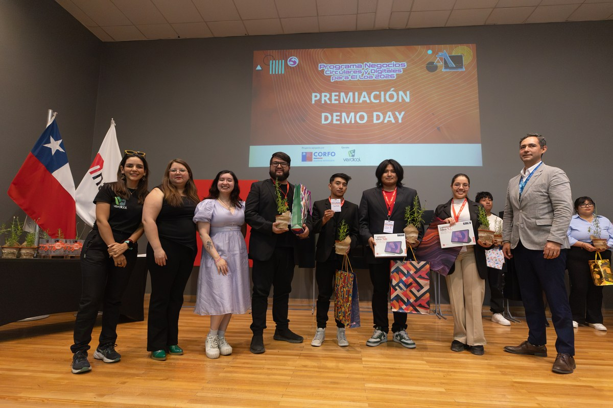
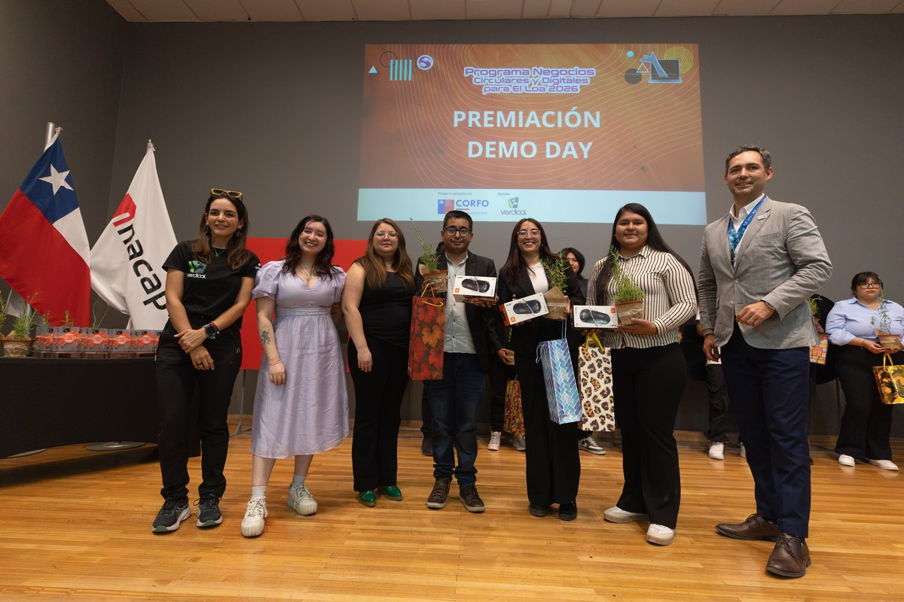
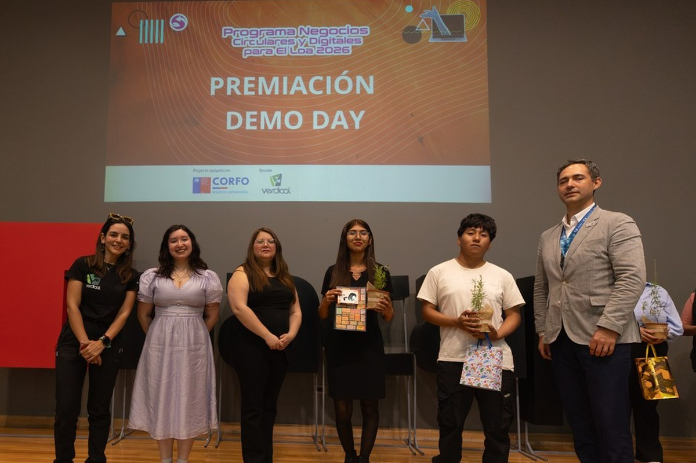
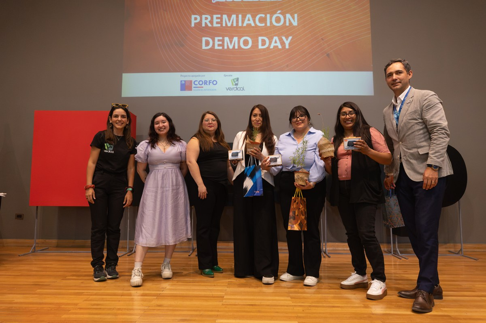

23 AIEP preparatorios + 11 INACAP activos
Línea base 3.16 ➔ Ex-post 4.41 / 5.0
Curva de Transferencia
Ex-ante (Línea Base) vs. Ex-post (Salida)
Evaluación Demoday por Criterio
Puntaje medio de los 4 proyectos (Escala 1 a 5)
Comparativa Institucional
Rendimiento Ex-post y NPS por Casa de Estudios
Los 4 Proyectos Destacados del Demoday (Con Incentivos Asignados)
Estudiantes organizados en 4 equipos que presentaron y defendieron sus ideas de proyecto ante la comisión de jurados

Ecoesmart
Felipe Vergara, Cristian Salfate, Lorens Barboza • INACAP
Solución Territorial: Sistema de reciclaje incentivado y trazabilidad digital de botellas PET con plataforma digital (Redimir/Reciclaz), sensores y recompensas. Prototipo MVP presentado ante el jurado.
Ver evaluación y comentarios del jurado
• Valentina Muñoz (16 pts): "El equipo destacó muchísimo con esa presentación de prototipo, gran avance para ser un MVP orientado a ODS."
• Rodrigo Mérida (18 pts): "Felicitaciones, pensaron en toda la trayectoria del reciclaje e incentivar a las personas."
• Cecilia Martínez (18 pts): "Muy buena propuesta para llegar a más personas y estructurar con cuántos basureros partir."

Recompost
Carlos Olave Godoy, Mariana Zambrana, Jair Rodriguez • INACAP
Solución Territorial: Red comunitaria de compostaje y basureros inteligentes con gamificación y asistencia de IA para la reducción masiva de residuos orgánicos urbanos en Calama.
Ver evaluación y comentarios del jurado
• Valentina Muñoz (18 pts): "Excelente oratoria y energía durante toda la presentación. Idea con mucho potencial de escalabilidad."
• Cecilia Martínez (18 pts): "Muy buena presentación, explicaron muy bien la idea y lo que se ocupará para el siguiente paso."
• Rodrigo Mérida (16 pts): "Deben conectarse con otras organizaciones para mejorar el ciclo del compost resultante."

TecnMin
Joaquin Yufla Anza y equipo • INACAP
Solución Territorial: Plataforma de tecnologías habilitantes, IoT y gemelos digitales para la descarbonización y optimización energética en faenas y contratistas mineros en la cuenca de El Loa.
Ver evaluación y comentarios del jurado
• Cecilia Martínez (15 pts): "Conectar más con la solución planteada y confiar en la proyección industrial del proyecto."
• Valentina Muñoz (14 pts): "Buen enfoque de datos, concentrarse en el significado cualitativo de la preparación territorial."
• Rodrigo Mérida (13 pts): "Enfoque relevante para la industria minera regional."

Calama se reconstruye
Lucy Tinte Reyes, Yoset Manacá, Ingri Gahona • AIEP
Solución Territorial: Fabricación y rediseño de mobiliario urbano ecológico a partir del rescate y valorización de descartes industriales y residuos comunales en Calama.
Ver evaluación y comentarios del jurado
• Cecilia Martínez (17 pts): "Muy buena presentación, me gustó mucho la solución y la capacidad de producción de mobiliario."
• Rodrigo Mérida (15 pts): "Es valioso que exploren espacios específicos para la producción y recolección de materiales."
• Valentina Muñoz (9 pts): "Gran enfoque territorial y capacidad del equipo para defender la propuesta durante las preguntas."